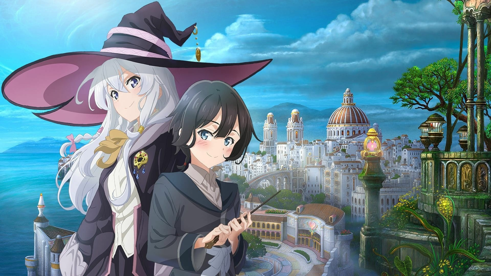

Tentang
Elaina adalah seorang penyihir sejati, akhrinya dia memulai perjalanan yang telah lama ditunggu-tunggu, dimana dia bertemu dengan banyaknya orang di sepanjang perjalanannya, mempelajari berbagai kisah mereka. Melalui
semua ini, dia menjelajahi dunia sepenuhnya dan mengalami sisi terang juga gelapnya untuk memulai kisah legendarisnya. Informasi selengkapnya hanya bisa kamu dapatkan di
Wikipedia.org
Anime
Wandering Witch: The Journey of Elaina

Dirilis pada 2 Oktober 2020. Meskipun ceritanya tampak ringan dan berfokus pada eksplorasi, The Journey of Elaina
juga memiliki momen-momen yang gelap dan emosional. Setiap episode sering kali mengisahkan tentang
keindahan, kemanusiaan, serta dilema moral yang dihadapi Elaina dalam perjalanannya, meskipun dia jarang terlibat langsung dalam masalah yang dia temui. Ini memberikan elemen reflektif tentang kehidupan dan petualangan itu
sendiri.
Informasi Lainnya

Saat ia melakukan perjalanan, Elaina menghadapi berbagai tantangan dan rintangan, tetapi ia selalu berhasil mengatasi mereka dengan kecerdikan dan sihirnya. Ia adalah seorang penyihir berbakat dan memiliki penguasaan terhadap
berbagai mantra dan sihir, yang ia gunakan dengan cara yang kreatif. Meskipun memiliki keahlian tersebut, Elaina bukanlah tak terkalahkan, dan kadang-kadang ia menemukan dirinya dalam situasi berbahaya. Namun, keberanian, tekad,
dan pemikiran cepatnya membantu ia melewati momen-momen tersebut.